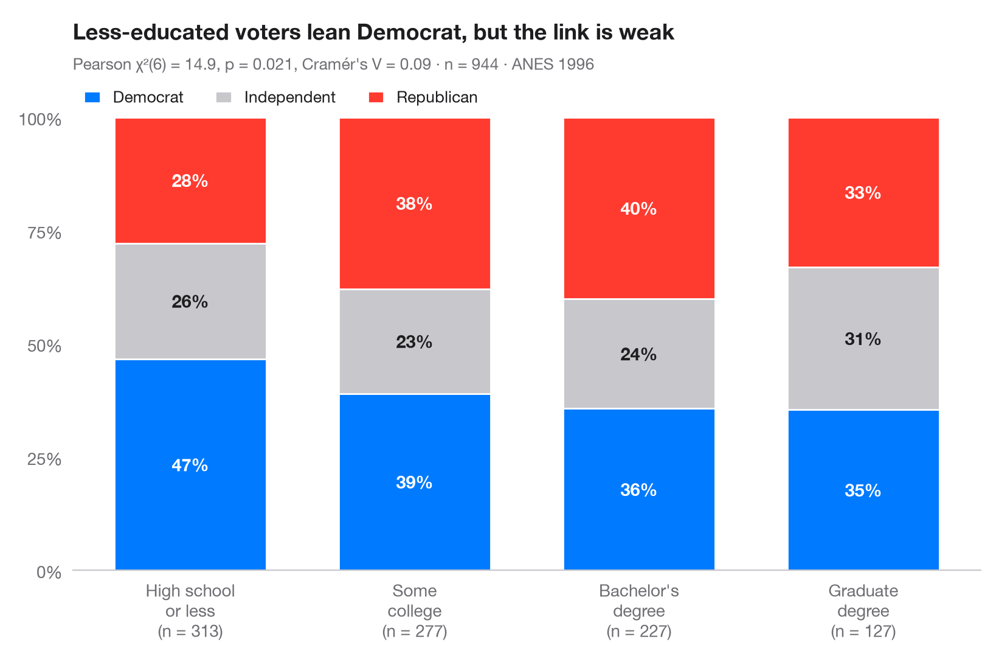

群別の積み上げ割合
割合ラベル、棒ごとの n、カイ二乗検定、クラメールの V を伴う 100% 積み上げ棒グラフ。

ggbarstats() の Python 版です。各棒は1つの群を 100% に換算したもので、各区分は群内におけるアウトカムの 条件付き分布 を表します。ラベルは行パーセントで、棒の下の数字は群のサイズです。サブタイトルには、ピアソンの χ² 独立性検定と、χ² を 0–1 の範囲に換算した効果量 クラメールの V を示しています。
データは statsmodels に同梱されている 1996年アメリカ全国選挙調査（sm.datasets.anes96）で、有権者 944 人の学歴別の政党帰属意識を示しています。検定は scipy.stats.chi2_contingency、V は scipy.stats.contingency.association で求めています。
コードおよび図中のテキストは英語です。
import matplotlib.pyplot as plt
import numpy as np
import pandas as pd
import statsmodels.api as sm
from scipy import stats
from scipy.stats.contingency import association
# Data: 1996 ANES — party identification (7-point scale) by education (7 levels)
df = sm.datasets.anes96.load_pandas().data
df["party"] = pd.cut(df.PID, [-1, 1, 4, 6], labels=["Democrat", "Independent", "Republican"])
df["education"] = pd.cut(df.educ, [0, 3, 5, 6, 7],
labels=["High school\nor less", "Some\ncollege", "Bachelor's\ndegree", "Graduate\ndegree"])
table = pd.crosstab(df.education, df.party)
pct = table.div(table.sum(axis=1), axis=0) * 100
# Pearson chi-squared test of independence + Cramér's V
chi2, p, dof, _ = stats.chi2_contingency(table, correction=False)
v = association(table.to_numpy(), method="cramer")
fig, ax = plt.subplots(figsize=(8, 5.2))
colors = ["#007AFF", "#C7C7CC", "#FF3B30"]
x = np.arange(len(pct))
bottom = np.zeros(len(pct))
for party, c in zip(pct.columns, colors):
ax.bar(x, pct[party], bottom=bottom, color=c, width=0.68, label=party, edgecolor="white", lw=1)
for xi, (b, h) in enumerate(zip(bottom, pct[party])):
ax.text(xi, b + h / 2, f"{h:.0f}%", ha="center", va="center", fontsize=10.5,
fontweight="semibold", color="#1D1D1F" if c == "#C7C7CC" else "white")
bottom += pct[party].to_numpy()
ax.set_xticks(x, [f"{g}\n(n = {n})" for g, n in zip(pct.index, table.sum(axis=1))])
ax.set_yticks(range(0, 101, 25), [f"{t}%" for t in range(0, 101, 25)])
ax.set_ylim(0, 100)
ax.grid(False)
ax.spines["left"].set_visible(False)
ax.legend(ncols=3, loc="lower left", bbox_to_anchor=(0, 1.0), fontsize=9.5,
handlelength=1, borderaxespad=0.3)
ax.set_title("Less-educated voters lean Democrat, but the link is weak", pad=46)
ax.text(0, 1.105, f"Pearson χ²({dof}) = {chi2:.1f}, p = {p:.3f}, Cramér's V = {v:.2f} · "
f"n = {table.to_numpy().sum()} · ANES 1996", transform=ax.transAxes,
fontsize=9.5, color="#6E6E73")
plt.show()
図にはオプションの PyStatlas スタイル を使用しています。同じ見た目にするには plt.style.use("pystatlas.mplstyle") を追加してください。
引用方法
PyStatlas は Thierry Warin が作成・運営しています。研究や業務に役立った場合は、ぜひ引用してください。
Warin, T. (2026). Stacked proportions by group. In PyStatlas: The Python Gallery of Statistical Graphics. https://warint.github.io/pystatlas/proportions-surveys/stacked-proportions/
@misc{warin2026statlas,
author = {Warin, Thierry},
title = {PyStatlas: The Python Gallery of Statistical Graphics},
year = {2026},
howpublished = {\url{https://warint.github.io/pystatlas/}},
note = {Source code: https://github.com/warint/pystatlas}
}